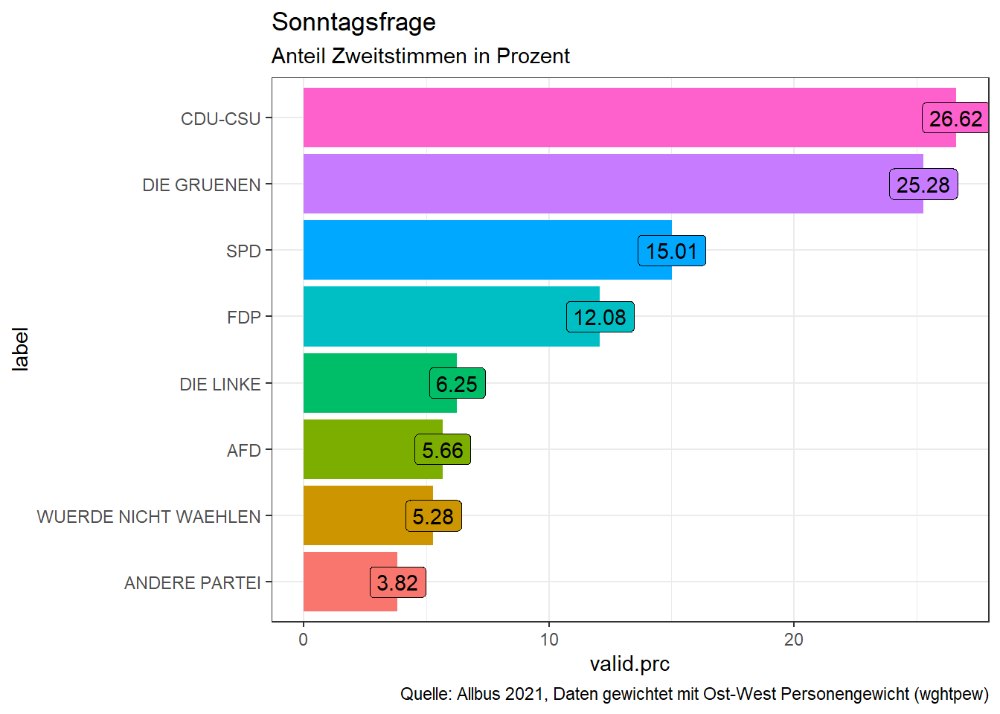
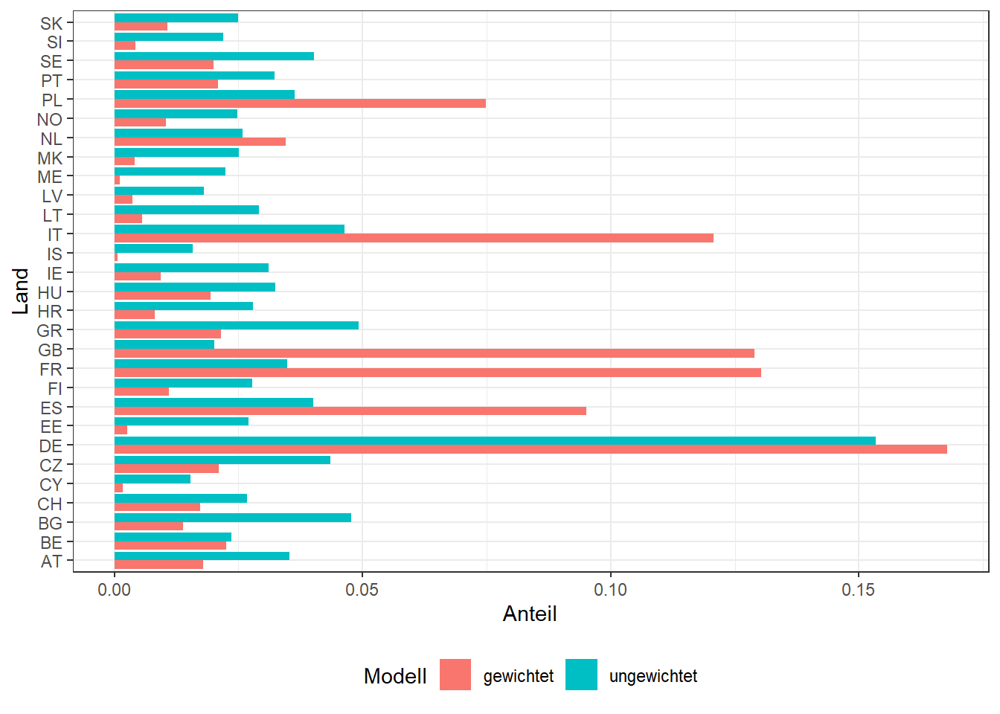

library(foreign)
allbus <- read.spss("./Daten/Allbus2021/ZA5280_v2-0-0.sav",
to.data.frame = TRUE,
use.value.labels = FALSE,
reencode = TRUE)4. Wie nutzen wir einfache Gewichte in R? Das sjmisc und das weights Paket
Einstieg
Hallo und herzlich willkommen zum vierten Teil der Videoserie zum Thema “Gewichtung mit R”. Nachdem wir in vorigen Teil drei gesehen haben, wo wir Informationen zur Gewichtung finden und vor allem, wie die konkreten Gewichtungsvariablen im Allbus und im ESS Datensatz aussehen, wollen wir jetzt die Gewichtung der Daten mit R umsetzen.
Vielleicht aber noch folgendes vorweg: ich habe zwar keine systematisch gewonnen Erkenntnisse darüber, aber mein Eindruck ist, dass bei R Nutzerinnen und -nutzern das Thema der Gewichtung manchmal etwas verdrängt wird. Das liegt vielleicht auch daran, dass R im Vergleich zu anderen in den Sozialwissenschaften genutzten Statistikpaketen deutlich breiter, das heißt auch in anderen wissenschaftlichen Disziplinen genutzt wird. Umfragedaten und Auswertungen von Daten aus komplexen Strichproben sind bei vielen Anwendern gar nicht relevant. Auch Beispiele oder Tutorials beinhalten diesen Aspekt nicht, entweder weil es für die Daten nicht relevant ist, oder um die Beispiele einfach zu halten . Und schließlich ist R modular aufgebaut; Dass heißt es gibt unterschiedliche Pakete für unterschiedliche Zwecke, bei denen Gewichtung unter Umständen nicht relevant ist. Hinzu kommt, dass es in den meisten Basis Funktionen - den sogenannten base-R Funktionen, keine Möglichkeit gibt, Daten zu gewichten. Dafür muss man zusätzliche Pakete nutzen.
Glücklicherweise gibt es verschiedene geeigneten Pakete, die teils das gleiche, teils unterschiedliches Funktionen für die Gewichtung von deskriptiver, bivariater und/oder multivariater Statistischer Verfahren ermöglichen. Diese sind neben wenigen base-R Funktionen:
- das
sjmiscPaket - das
weightsPaket - und das
surveyPaket
Das survey Paket ist dabei meine klare Empfehlung. Das schauen wir uns auch ausführlich in Teil fünf an, da es ein paar mehr Möglichkeiten bietet, als die anderen beiden Pakete. Für die einfache Gewichtung von deskriptiven Tabellen und Maßzahlen, sind die beiden ersten Pakete jedoch ausreichend.
Lernziele dieses Videos sind, dass Sie wissen, wie man mit dem sjmisc Paket oder dem weights Paket Daten gewichtet und deskriptive und einfache bivariate Analysen durchführt.
Wechseln wir also in R und schauen es uns genau an…
Daten einlesen
Bevor wir mit der Gewichtung von Daten loslegen, müssen wir zuerst unsere beiden Datensätze einlesen.
ess.i <- read.spss("./Daten/ESS10/ESS10.sav",
to.data.frame = TRUE,
use.value.labels = FALSE,
reencode = TRUE)
ess.sc <- read.spss("./Daten/ESS10/ESS10SC.sav",
to.data.frame = TRUE,
use.value.labels = FALSE,
reencode = TRUE)
# Zusammenführen
vars <- names(ess.i)[names(ess.i) %in% names(ess.sc)]
ess <- rbind(ess.sc[,vars], ess.i[,vars])
ess <- ess[!(ess$cntry %in% c("IL", "RS")),]Das sjmisc Paket
Das sjmisc Paket ist nicht explizit für die Analyse von gewichteten Daten entwickelt worden. Es ist eine Art Schweizer Taschenmesser für die Datenvorbereitung. Sie können damit Recodieren, Dichotomisieren oder Variablen gruppieren usw. Aber - und das ist für uns wichtig - es gibt auch einige Funktionen, die gewichtete Analysen erlauben.
Installieren wir also das sjmisc Paket und laden es aus der Bibliothek:
#install.packages("sjmisc")
library(sjmisc)Tabellen
Der erste Schritt in jeder Analyse ist es, sich die interessierenden Variablen so nah an ihrer Rohform wie möglich anzusehen. Dafür bieten sich bei Variablen mit diskreten, also wenigen, überschaubaren Merkmalsausprägungen Häufigkeitstabellen an. Das sind in der Regel ordinale oder kategoriale Merkmale.
Für ordinale oder kategoriale Merkmale, wo deskriptive Kennzahlen nur wenig Information bieten, lassen sich Häufigkeitstabellen nutzen.
Als Beispiel betrachten wir aus dem Allbus die Variable pv01 zur Sonntagsfrage.
Es liegen die folgenden Merkmalsausprägungen vor:Wenn am nächsten Sonntag Bundestagswahl wäre, welche Partei würden Sie dann mit Ihrer ZWEITSTIMME wählen?
| x | |
|---|---|
| CDU-CSU | 1 |
| SPD | 2 |
| FDP | 3 |
| DIE GRUENEN | 4 |
| DIE LINKE | 6 |
| AFD | 42 |
| ANDERE PARTEI | 90 |
| WUERDE NICHT WAEHLEN | 91 |
Im sjmisc Paket lassen sich mit der Funktion frq() Häufigkeitstabellen erstellen. Die erste Zeile liefert die ungewichtete Häufigkeitstabelle.
# Ungewichtet
frq(allbus$pv01)x <numeric>
# total N=5342 valid N=4026 mean=13.92 sd=26.98
Value | N | Raw % | Valid % | Cum. %
---------------------------------------
1 | 1043 | 19.52 | 25.91 | 25.91
2 | 595 | 11.14 | 14.78 | 40.69
3 | 475 | 8.89 | 11.80 | 52.48
4 | 944 | 17.67 | 23.45 | 75.93
6 | 305 | 5.71 | 7.58 | 83.51
42 | 275 | 5.15 | 6.83 | 90.34
90 | 163 | 3.05 | 4.05 | 94.39
91 | 226 | 4.23 | 5.61 | 100.00
<NA> | 1316 | 24.63 | <NA> | <NA>Aber wir in der Funktion frq() noch das Argument weights nutzen. Hier geben wir an, welche Gewichtungsvariable genutzt werden soll. Wenn die Anslysebene Personen ist und ganz Deutschland betrachtet werden soll, muss im Allbus 2021 die Gewichtungsvariable wghtpew genutzt werden.
# Gewichtet nach wghtpew
frq(allbus$pv01,
weights = allbus$wghtpew)xw <numeric>
# total N=4031 valid N=4031 mean=12.93 sd=26.22
Value | N | Raw % | Valid % | Cum. %
---------------------------------------
1 | 1073 | 26.62 | 26.62 | 26.62
2 | 605 | 15.01 | 15.01 | 41.63
3 | 487 | 12.08 | 12.08 | 53.71
4 | 1019 | 25.28 | 25.28 | 78.99
6 | 252 | 6.25 | 6.25 | 85.24
42 | 228 | 5.66 | 5.66 | 90.90
90 | 154 | 3.82 | 3.82 | 94.72
91 | 213 | 5.28 | 5.28 | 100.00
<NA> | 0 | 0.00 | <NA> | <NA>Betrachten wir mal nicht die Spalte Raw %, da hier die fehlenden Werte in der oberen Tabelle dabei sind, unten aber nicht. Leider kann ich Ihnen auch nicht sagen, warum die Funktion das unterschiedlich ausgibt. Selbst wenn ich in der unteren Zeile explizit angebe show.na=TRUE tauchen diese nicht auf. Aber abgesehen davon sehen wir tatsächlich auch substantielle Unterschiede zwischen den beiden Tabellen. Der Anteil der Parteien verändert sich nämlich leicht. Währen in der ersten Tabelle die Werte verzerrt waren, da ostdeutsche Befragte durch das Oversampling überreprsentiert waren, ist diese Verzerrung in der zweiten Tabelle ausgeglichen. Parteien, die in Ostdeutschland stärker sind als in Westdeutschland zeigen in der zweiten Tabelle also geringere Anteile als in der ersten. Ebenso NichtwählerInnen und der Anteil der Nichenpartei-Wähler.
Oft möchte man die Ergebnisse einer solchen Häufigkeitstabelle zum Beispiel für Grafiken mit ggplot2 weiter nutzen. Wir können die Tabelle dafür als Objekt speichern. Mit der Funktion str() sehen wir, das das Objekt ein Listenobjekt ist, welches als erstes Element einen dataframe enthält.
# Gewichtet nach wghtpew
tabelle <- frq(allbus$pv01,
weights = allbus$wghtpew)
str(tabelle)List of 1
$ :'data.frame': 9 obs. of 6 variables:
..$ val : num [1:9] 1 2 3 4 6 42 90 91 NA
..$ label : chr [1:9] "<none>" "<none>" "<none>" "<none>" ...
..$ frq : num [1:9] 1073 605 487 1019 252 ...
..$ raw.prc : num [1:9] 26.62 15.01 12.08 25.28 6.25 ...
..$ valid.prc: num [1:9] 26.62 15.01 12.08 25.28 6.25 ...
..$ cum.prc : num [1:9] 26.6 41.6 53.7 79 85.2 ...
..- attr(*, "label")= chr "xw"
..- attr(*, "vartype")= chr "numeric"
..- attr(*, "mean")= num 12.9
..- attr(*, "sd")= num 26.2
..- attr(*, "ci")='data.frame': 9 obs. of 2 variables:
.. ..$ lower: num [1:9] 1018 561 446 965 222 ...
.. ..$ upper: num [1:9] 1128 649 528 1073 282 ...
..- attr(*, "relative.ci")='data.frame': 9 obs. of 2 variables:
.. ..$ lower: num [1:9] 0.253 0.139 0.111 0.239 0.055 ...
.. ..$ upper: num [1:9] 0.28 0.161 0.131 0.266 0.07 ...
- attr(*, "class")= chr [1:2] "sjmisc_frq" "list"
- attr(*, "print")= chr "txt"
- attr(*, "encoding")= chr "UTF-8"tabelle[[1]] val label frq raw.prc valid.prc cum.prc
1 1 <none> 1073 26.62 26.62 26.62
2 2 <none> 605 15.01 15.01 41.63
3 3 <none> 487 12.08 12.08 53.71
4 4 <none> 1019 25.28 25.28 78.99
5 6 <none> 252 6.25 6.25 85.24
6 42 <none> 228 5.66 5.66 90.90
7 90 <none> 154 3.82 3.82 94.72
8 91 <none> 213 5.28 5.28 100.00
9 NA <NA> 0 0.00 NA NADiesen dataframe können wir direkt für ggplot() nutzen. Ich schließe noch die NAs aus, füge die Parteinamen hinzu und sortiere die Labels. Und schon kp
tabelle_df <- tabelle[[1]]
tabelle_df <- tabelle_df[-9,] #Zeile mit dem NA eintrag ausschließen
tabelle_df$label <- rev(names(attr(allbus$pv01, "value.labels")))
tabelle_df$label <- as.factor(tabelle_df$label)
tabelle_df$label <- forcats::fct_reorder(tabelle_df$label, tabelle_df$valid.prc)
library(ggplot2)
ggplot(tabelle_df, aes(x=label,
y=valid.prc,
label=valid.prc,
fill=label)) +
geom_bar(stat="identity") +
geom_label() +
coord_flip() +
theme_bw() +
theme(legend.position = "none") +
labs(title = "Sonntagsfrage",
subtitle = "Anteil Zweitstimmen in Prozent",
caption="Quelle: Allbus 2021, Daten gewichtet mit Ost-West Personengewicht (wghtpew)")
Deskriptive Maßzahlen
Für metrische Merkmale, insbesondere, wenn sie kontiuierlich sind oder viele Merkmalsausprägungen aufweisen, sind Tabellen häufig ungeeignet. Stattdessen beschreiben wir diese Skalen mit deskriptiven Maßzahlen wie Mittewert und Standardabweichung.
Betrachten wir für dieses Beispiel die Frage nach der Religiösität im Allbus in Variable rb07.
Würden Sie von sich sagen, dass Sie eher religiös oder eher nicht religiös sind? Wo würden Sie Ihre eigenen Ansichten auf dieser Skala einstufen? 1 ‘nicht religiös’ … 10 ‘religiös’
Das sjmiscPaket bietet hier die Funktion descr() um eine Reihe relevanter deskriptive Maßzahlen auszugeben. Schauen wir zunächst auf die ungewichteten Zahlen:
descr(allbus$rb07)
## Basic descriptive statistics
var type label n NA.prc mean sd se md trimmed range iqr skew
dd numeric dd 3555 33.45 4.04 3.05 0.05 3 3.72 9 (1-10) 6 0.56Dann übergeben wir wieder die Gewichtungsvariable wghtpew als weights Argument. Ein kleiner Bug in der derzeitgen Version von sjmisc ist, dassfür die descr() Funktion, wenn ein Gewicht angegeben wird, die Angabe der Variablen mit dem $-Operator nicht funktioniert, wir müssen also zunächst den dataframe angeben und danach als zweites Argument, die Variable, um die es geht.
descr(allbus,
rb07,
weights = wghtpew)
## Basic descriptive statistics
var type label n NA.prc mean sd se range iqr skew
rb07 numeric rb07 3569 33.45 4.29 3.05 0.05 9 (1-10) 6 0.56# Diese schreibweise funktioniert nicht:
# descr(allbus$rb07,
# weights = allbus$wghtpew) Allerdings kann man auch mit einer base-R Funktion einen gewichteten Mittelwert anfordern. Und zwar mit weighted.mean():
weighted.mean(allbus$rb07, allbus$wghtpew, na.rm=T)[1] 4.291535Das weights Paket
Anders als das sjmiscPaket ist das weights Paket dezidiert dafür gedacht, einfache gewichtete Statistiken zu berechnen. Um das weights Paket nutzen zu können, müssen wir es zuerst installieren und aus der Bibliothek laden:
#install.packages("weights")
library(weights)Tabellen
Auch mit dem weightsPaket lassen sich einfache gewichtete Häufigkeitstabellen anfordern. Nutzen wir nun einmal den ESS als Beispiel. Ich lasse mir zunächst eine ungewichtete Häufigkeitstabelle für die Variable cntry ausgeben. Welchen Anteil machen die Beftragten eines Landes an allen Befragten aus.
prop.table(table(ess$cntry))
AT BE BG CH CY CZ DE
0.03521944 0.02357927 0.04779153 0.02677943 0.01538543 0.04353636 0.15341469
EE ES FI FR GB GR HR
0.02711352 0.04014278 0.02772894 0.03476227 0.02020326 0.04921578 0.02799269
HU IE IS IT LT LV ME
0.03251161 0.03112252 0.01587776 0.04642003 0.02917077 0.01798776 0.02247151
MK NL NO PL PT SE SI
0.02512660 0.02584752 0.02481010 0.03630961 0.03231819 0.04021311 0.02201435
SK
0.02493318 Und dann gewichtet nach der Gewichtungsvariable anweight. Sie soll sicherstellen, dass wenn alle Länder gemeinsam betrachtet werden, die Anzahl der Befragten pro Land zueinander im Richtigen Verhältnis relativ zur jeweiligen Bevölkerungsgröße stehen.
wpct(ess$cntry,
weight=ess$anweight,
na.rm=TRUE) AT BE BG CH CY CZ
0.0178968211 0.0225358337 0.0138489091 0.0172341671 0.0017606303 0.0210208174
DE EE ES FI FR GB
0.1677474889 0.0026014901 0.0951090607 0.0109361452 0.1303559592 0.1289177883
GR HR HU IE IS IT
0.0214557887 0.0081009347 0.0194563221 0.0093750996 0.0007016343 0.1207596143
LT LV ME MK NL NO
0.0055543039 0.0037216784 0.0011925604 0.0040614691 0.0345517102 0.0104607004
PL PT SE SI SK
0.0748502421 0.0208653919 0.0199898163 0.0041920846 0.0107455381 Das können wir uns auch noch mal als Grafik anschauen:
cntry_df <- data.frame(Land = rep(names(prop.table(table(ess$cntry))),2),
Anteil = c(prop.table(table(ess$cntry)),
wpct(ess$cntry, weight=ess$anweight,na.rm=TRUE)),
Modell = c(rep("ungewichtet", 29),
rep("gewichtet", 29)))
ggplot(cntry_df, aes(x=Land, y=Anteil,
group=Modell, fill=Modell)) +
geom_bar(stat="identity", position="dodge") +
theme_bw() +
coord_flip() +
theme(legend.position = "bottom")
Befragte bevölkerungsstarker Länder werden also hochgewichtet, Befragte kleinerer Länder bekommen ein kleineres Gewicht, damit im Aggregat, das Verhältnis der Anzahl Befragten unabhängig von der jewiligen Stichprobengröße zu den Bevölkerungsgrößenverhältnissen der Länder zueinander passt.
Bivariate Statistik
Neben der Funktion für Häufigkeiten, hat das weights Paket auch drei Funktionen für bivariate Statistik:
- \(\chi^2\) Test
- Pearsons Korrelation
- t-Test
\(\chi^2\) Test
Testet die Nullhypothese, dass in der Kontingenztabelle kein Zusammenhang zwischen den beiden Merkmalen vorliegt. Hier: der Zusammenhang zwischen Bildung und Ländern.
wtd.chi.sq(ess$edulvlb, ess$cntry,
weight=ess$anweight,
na.rm=TRUE) Chisq df p.value
62964.89 756.00 0.00 Es besteht also ein statistischer Zusammenhang zwischen der Verteilung der Bildungsabschlüsse und den Ländern.
Korrelation
Auch Korrelationen lassen sich gewichtet berechnen. Im Beispiel nutzen wir noch einmal Variablen aus dem Allbus: die Religiösität und das Alter der Befragten. Zuerst die base-R Funktion, ohen Gewichtung. Dann die Funktion wtd.cor() aus dem weights Paket:
cor.test(allbus$rb07, allbus$age)
Pearson's product-moment correlation
data: allbus$rb07 and allbus$age
t = 7.5889, df = 3528, p-value = 4.103e-14
alternative hypothesis: true correlation is not equal to 0
95 percent confidence interval:
0.09413935 0.15906152
sample estimates:
cor
0.1267362 wtd.cor(allbus$rb07, allbus$age,
weight=allbus$wghtpew) correlation std.err t.value p.value
Y 0.1579195 0.01662462 9.499133 3.779573e-21Wie wir sehen, erhalten wir eine etwas höhere Korrelation in den gewichteten Daten. Das lässt sich damit erklären, dass in den ungewichteten Daten ostdeutsche Befragte überrepräsentiert sind, bei denen der Zusammenhang aufgrund der DDR-Sozialisation geringer ausfällt.
t-Test
Schließlich gibt auch eine Funktion für einen gewichteten t-Test: wtd.t.test()
Als Beispiel nutze ich aus dem Allbus die Variable hs04:
Wie häufig kam es in den letzten vier Wochen vor, dass Sie sich gehetzt oder unter Zeitdruck fühlten? 1 ‘immer’ 5 ‘nie’
Um einen t-Test für unabhängige Stichproben zu machen, muss ich noch die Gruppierungsvariable angeben. Hier die Variable dh16, ob Kinder im eigen Haushalt leben: 0 bedeutet Keine Kinder im HH, nicht-0, dass Kinder im HH leben.
Betrachten wir zuerst den ungewichteten und danach den gewichteten t-Test:
# t-test für ungabhängige Stichproben
# Variable allbus$dh16 Kinder im eigenen Haushalt:
# 0: Keine Kinder im HH, nicht-0: Kinder im HH
t.test(allbus$hs04[allbus$dh16!=0],
allbus$hs04[allbus$dh16==0])
Welch Two Sample t-test
data: allbus$hs04[allbus$dh16 != 0] and allbus$hs04[allbus$dh16 == 0]
t = -13.783, df = 1851.8, p-value < 2.2e-16
alternative hypothesis: true difference in means is not equal to 0
95 percent confidence interval:
-0.5957398 -0.4473176
sample estimates:
mean of x mean of y
2.657205 3.178734 wtd.t.test(allbus$hs04[allbus$dh16!=0],
allbus$hs04[allbus$dh16==0],
weight=allbus$wghtpew[allbus$dh16!=0],
weighty=allbus$wghtpew[allbus$dh16==0])$test
[1] "Two Sample Weighted T-Test (Welch)"
$coefficients
t.value df p.value
-12.50611 1825.60383 0.00000
$additional
Difference Mean.x Mean.y Std. Err
-0.47404233 2.66777020 3.14181253 0.03790485 Wir sehen, es werden jeweils leicht unterschiedliche Mittelwerte berechnet. Der Unterschied ist aber gemessen an den Standardfehlern so groß, dass in beiden Formen des t-Tests die Nullhypothese mit sehr geringer Irrtumswahrscheinlichkeit zurückgewiesen werden kann.
Bei anderen Beispielen und vor allem bei geringerer Fallzahl kann es jedoch durchaus sein, dass sich die Signifikanz der Ergebnisse zwischen gewichteten und ungewichteten statistischen Tests unterscheiden.
Dazu werden wir auch im nächsten Video ein Beispiel mit dem survey Paket sehen.